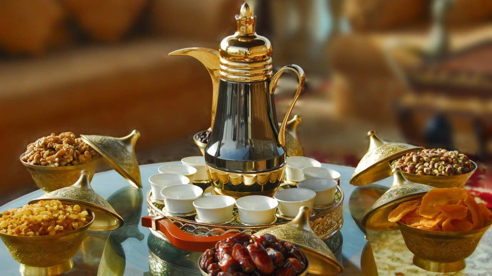

We Have 2 Different Coffees
Middle East coffe 
For people to enjoy a warm cup of middle eastern coffee like you do today, a few transformations had to first take place. The 1200s were the turning point for the modern beverage. At this time, the Muslim community in Arabia began brewing coffee for its stimulant powers. At the time, the drink was used to keep them awake for extremely long prayer sessions. The beans were parched and boiled to make a drink. While the Middle East began blending coffee beverages centuries ago, the rest of the world did not get coffee until the 1600s. Until then, coffee was only consumed within Arabia. According to tradition, there was not a single coffee plant outside of Africa or Arabia until the 1600s. At this time, an Indian pilgrim known as Baba Budan Baba Budanleft Mocha with seven beans having fallen in love with the beverage during a pilgrimage to Mecca. These beans were the start of Europe’s fascination with coffee.
 Amrican coffee
Amrican coffee
Caffè Americano is a type of coffee drink prepared by diluting an espresso with hot water, giving it a similar strength to, but different flavor from, traditionally brewed coffee. The strength of an Americano varies with the number of shots of espresso and the amount of water added Caffè Americano For the Americans, coffee has a very different “role” to the typical one it has for Italians: in fact in the United States, it is considered normal to drink coffee with a meal, to sip slowly while reading or while chatting with friends or colleagues. Often served in those well-known coffee cups with a lid, which keep it hot and stop it from spilling out of the cup, the American coffee is often consumed “to go”, to take away and drink on the move, walking to work in the morning or at the subway station.
Our food is HALAL food
Halal is an Arabic word that means “permissible.”
Halal is an Arabic word meaning lawful or permitted. In reference to food, it is the dietary standard, as prescribed in the Qur’an (the Muslim scripture). The opposite of halal is haram, which means unlawful or prohibited. Halal and haram are universal terms that apply to all facets of life.
What will change our routine ?
Broadly speaking, any time you force yourself to make a change to your workflow, you encourage your brain to make new connections (a concept we've discussed previously called neuroplasticity). Routines can run on idle, but changing our habits force your brain to pay attention and learn what you're doing more carefully.
This is the same in our food and drink, we have to try new things for our brain and health.